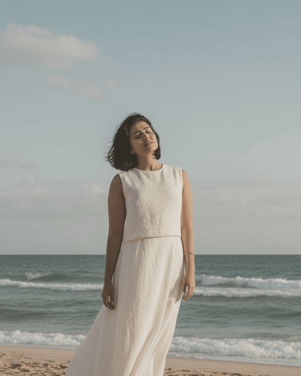

I’m Alaa
My story
I lost my voice. Then I found it.
After an illness no one could explain and a near-death experience, I rebuilt my confidence from the ground up — faith first, then self-belief. Now I sit with women who feel lost the way I once did.
Years practising law taught me what really drives a fight, a fear, a refusal to let go.
300+Hours of healing sessions
5+Certifications in holistic healing
10+Years in the high-pressure legal world